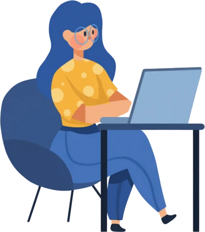

What I bring to a team
Capabilities
From the first needs conversation to a tested, accessible course and the job aids that back it up on the job. Each capability links to a case study that shows it.

Instructional design
Learner-centred curricula and modules that turn business needs into measurable, demonstrable skills.
- Needs analysis
- Learning objectives mapped to decisions
- Storyboards
eLearning & digital learning
Self-paced modules, micro-lessons, branching scenarios and software simulations in modern authoring tools.
- Rise 360 and Storyline 360
- Custom HTML course templates
- SCORM / xAPI packages
Training & facilitation
Practical instructor-led (ILT) and virtual (VILT) workshops that get participants talking and practising.
- Facilitator guides
- Session plans
- Activities and rubrics
Learning UX & visual design
UI and UX practice plus clean graphic design, so navigation is intuitive and accessible.
- Course templates and design systems
- Light and dark themes
- WCAG 2.1 AA
Assessment & evaluation
Authentic assessments and evaluation aligned to Kirkpatrick’s levels.
- Scenario-based knowledge checks
- Situational judgement tests
- xAPI evidence
Job aids & performance support
One-page tools people keep beside the medical cabinet, the room door or the keyboard.
- A4 printable job aids
- Quick reference cards
- Microlearning video scripts
Looking for these skills in your team?
I’m open to full-time learning design and development roles in Melbourne. Let’s talk about what your learners need.